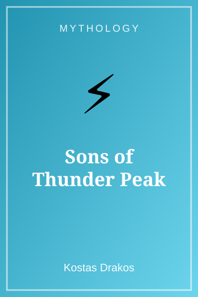
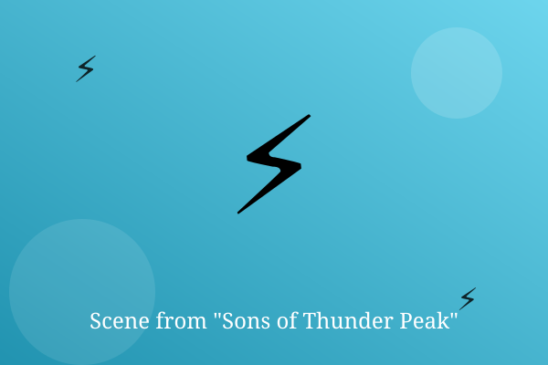

Chapter 1: The Climb

Everyone in the valley knew not to climb Thunder Peak. Aris and Nikos climbed it anyway, because the harvest had failed.
Halfway up, the sky went dark and a voice rolled across the rocks: 'Turn back, mortals.'
Aris cupped his hands and shouted back, 'We have a complaint, and you are going to hear it.'
— End of Chapter —